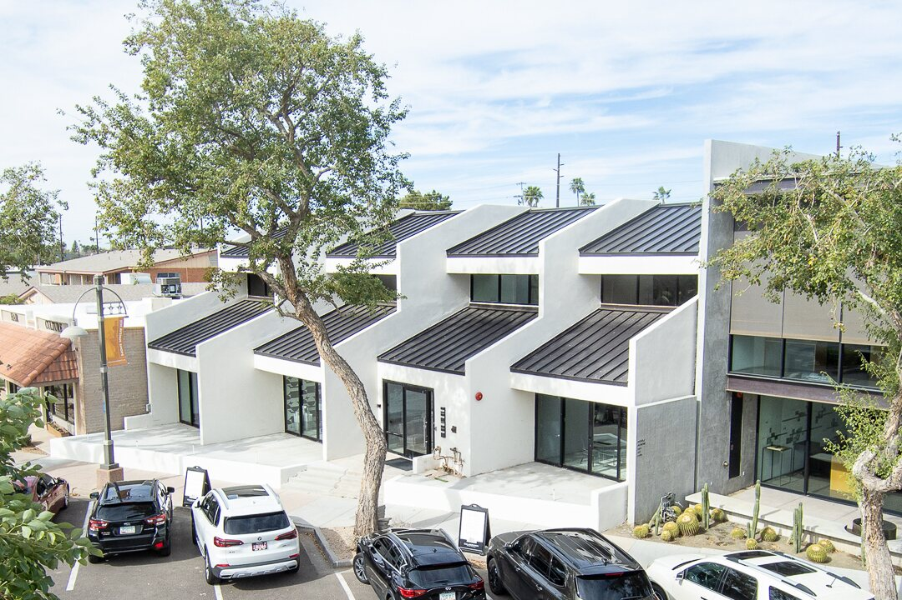
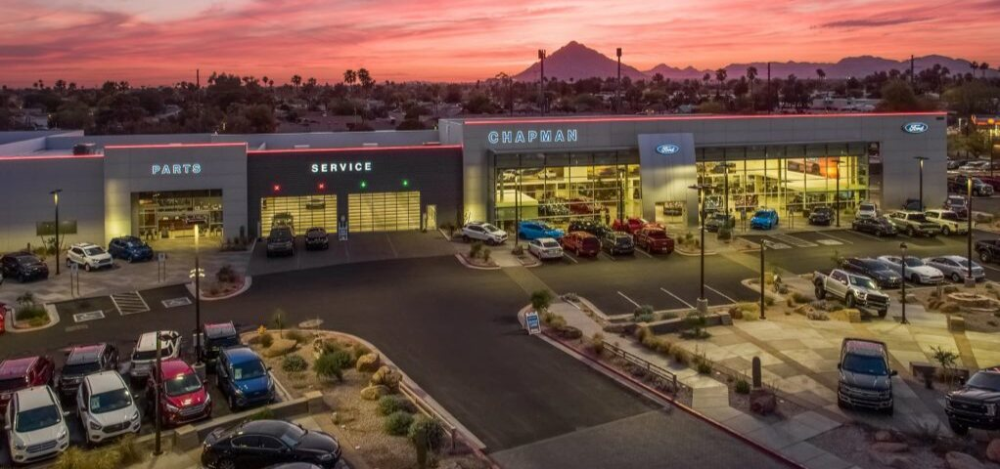
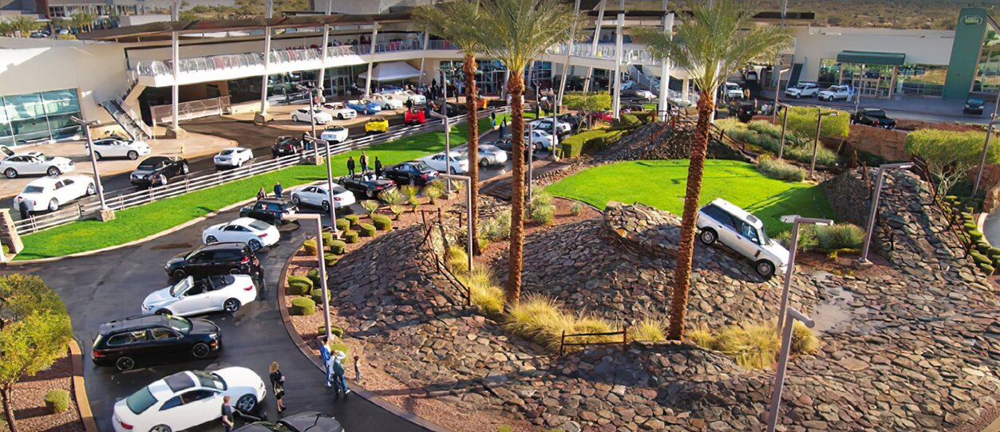
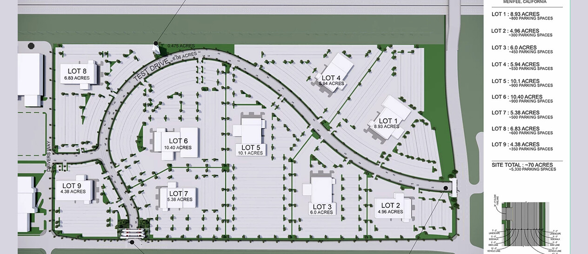
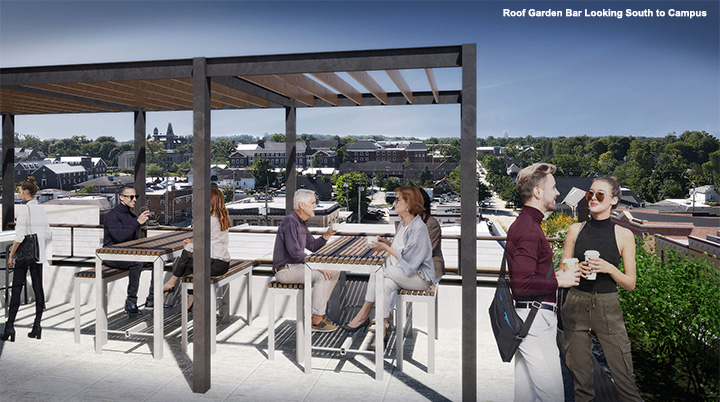

“Committed to impacting communities through innovative development, dedicated people, and loyal relationships.”
Rooted in the Southwest.
Built for the nation.
Mullin Development was founded in Scottsdale in 1994 by father and son Art and Jim Mullin. Over three decades, the firm has grown from its desert roots into a national practice — shaping automotive and commercial real estate at the local and national level.
Strategic rather than transactional, we invest in relationships as much as real estate, so that every project makes a long-term contribution to its community.

Selected work.
Complete portfolio →
Scottsdale Autoshow
A 70-acre automotive development on the Salt River Pima–Maricopa Indian Community.
Phase 05 — Occupancy

Penske North Scottsdale 101
A 40-acre facility off Loop 101, home to nine premium franchises.
Phase 05 — Occupancy

Riverside County Auto Park
A 70-acre campus marking the firm’s expansion into Southern California — entitlements under way.
Phase 02 — Entitlement

Greencastle Hotel
A historic hotel transformed into a luxury boutique property.
Phase 04 — Vertical
The record — where every work stands.
1994 — presentAnyone can buy a building.
We make one exist.
Every work in this book travelled the same road — from raw ground, through the years of approvals nobody photographs, to the day the doors open. This is that road.
00
Ground
We look for land before it looks like anything. Market research, corridors, traffic counts, the parcel nobody has drawn a line on yet.
6 — 24 months
01
Assemblage
Land assembled, terms agreed, the ground secured — by purchase or by long-term lease with the community that owns it.
3 — 12 months
02
Entitlement
Zoning, use permits, jurisdictional approval, the plat recorded. The hardest years, and the reason developers exist.
9 — 36 months
03
Horizontal
Grading, utilities, drainage, roads, pads. The land is made ready to carry a building.
4 — 10 months
04
Vertical
Steel, glass, and the thing itself. Construction managed end to end, to completion.
8 — 18 months
05
Occupancy
Certificate of occupancy, doors open, and the long hold — a term measured in decades, not quarters.
20 — 99 year terms
Most firms enter at phase 04 and leave at phase 05. Mullin has spent thirty years in phases 00 through 03 — the unglamorous part, where a development is actually decided.
What we mean by “with Purpose.”
-
01Develop
A different approach to crafting developments — high-quality properties that create value for stakeholders and neighboring communities alike.
-
02Plan
Strategic location, attention to detail, and aesthetic consideration of the surrounding environment.
-
03Build
A responsibility to minimize environmental impact — influencing how buildings are built, sourced, managed, occupied, and sold.
-
04Consult
Proprietary research, strategically applied — delivering results that surpass expectations.
-
05Partner
Long-lasting relationships with retailers, financial institutions, property owners, communities, and municipalities.
-
06Give
We align our work with clients we can give back to — every engagement creates value beyond the transaction.

An arc this long needs people who stay.
-
Jim Mullin
President
Past President of Staubach AutoGroup. Involved in more than 1,200 automotive retail locations and forty-plus developments across four continents.

-
Jacqueline Swanson
Director of Operations
Operational excellence and project management, with a background spanning healthcare, property, and construction management.
-
Mark Simmons
Corporate Controller
A four-decade finance career across Big Four firms — more than thirty years as Controller, VP‑Finance, or CFO.
-
Mark Jackson
Director of Market Research
Market analysis and site selection — identifying high-value development opportunities across emerging markets.
Beyond the core practice, two ventures carry the same purpose into new ground.